1 Overview
This tutorial reads a 10x Atera whole-transcriptome run of non-diseased human kidney into an on-disk GiottoDisk project. It then filters, clusters and names the cells, and looks at the tissue’s spatial organization: spatially variable genes, co-expression modules, signature enrichment and the cell types that sit next to each other.
The data are the output of the commercial Atera instrument (Atera
v1), which ships its data as zarr archives. They are read with
createGiottoAteraObject(). For the Atera preview data that
10x converted to the Xenium layout, see the Atera Human Breast Cancer
tutorial.
Reading the data is the longest step, and you only do it
once. It streams more than a billion transcripts, the cell
outlines and the expression matrix into the project directory. After
that, the saved object reopens in seconds with
loadGiotto(), and every step below runs quickly on a
personal computer. How quickly depends on the number of cores and the
amount of memory available: GiottoDisk reads the data in pieces sized to
the memory it finds free.
Hardware: the analysis after reading runs on a computer with 16 GB of memory. Reading the data is the most demanding step, so more memory and cores help most there. See Memory and window size to check and adjust how much memory each step uses on your machine.
2 Install extra packages
2.1 Giotto extensions
This tutorial uses GiottoDisk for on-disk processing. These are preview dev builds off the dev and gsource Giotto package branches. If GiottoDisk has not been installed yet, use the following:
# GiottoDisk install; also installs arrow (with zstd support) and tilework
remotes::install_github("giotto-suite/GiottoUtils", ref = "dev")
GiottoUtils::suite_install("GiottoDisk", install_arrow = TRUE)
# Optional for matrix maths speedup:
install.packages("GiottoKernels",
repos = c("https://giotto-suite.r-universe.dev", "https://cloud.r-project.org")
)2.2 Zarr readers
Atera v1 output is a set of zipped zarr archives. GiottoDisk reads them with the help of Rarr (Bioconductor) and zip:
if (!requireNamespace("BiocManager", quietly = TRUE)) {
install.packages("BiocManager")
}
BiocManager::install("Rarr")
install.packages("zip")2.3 SedonaDB and DuckDB installation
GiottoDisk runs spatial joins, such as the aggregation of transcripts into cells below, in SedonaDB when it is installed, and in DuckDB otherwise. Both are optional; without them it falls back to tiled terra operations, which are much slower at this scale.
install.packages("sedonadb",
repos = c("https://apache.r-universe.dev", "https://cloud.r-project.org")
)
install.packages("duckdb")Loading SedonaDB can print messages about PROJ or GDAL data directories it did not find. They do not affect the steps in this tutorial.
2.4 smotif installation
The cell-cell interaction section at the end uses smotif and its Rust backend smotifrs to count cell type motifs:
install.packages(c("smotif", "smotifrs"),
repos = c("https://drieslab.r-universe.dev", "https://cloud.r-project.org")
)3 Dataset explanation
This tutorial uses a 10x Genomics Atera In Situ run of an FFPE section of non-diseased human kidney, measured with the Atera Human Whole Transcriptome Gene Expression panel. The panel targets 18,049 genes; the section has 399,120 segmented cells and 1.08 billion high-quality transcripts.
3.1 Atera v1 output
An Atera v1 output folder holds its data in zipped zarr archives rather than the parquet and h5 files of a Xenium run:
-
transcripts.zarr.zip: every decoded transcript, with its position and quality score -
cells.zarr.zip: the cell and nucleus outlines and the cell metadata -
cell_feature_matrix.zarr.zip: the cell by gene matrix -
morphology_2d/: the DAPI and cell segmentation stain images -
experiment.spatial: run metadata, including the image pixel size
The folder also holds archives for the 10x viewer
(binned_transcripts, csc_cell_feature_matrix)
that Giotto does not need.
createGiottoAteraObject() streams the archives straight
into an on-disk project, so it needs a GiottoDisk backend. There is no
in-memory Atera reader: at this size the data would not fit in memory
anyway.
4 Setup
library(arrow) # this must be libraried before terra or GiottoClass
library(Giotto)
library(GiottoDisk)
data_dir <- "path/to/Atera_v1_WTA_Kidney_non_diseased_FFPE_outs"
project_dir <- "path/to/atera_kidney_project"
# set an appropriate amount of parallel workers for your computer
future::plan(future.mirai::mirai_multisession, workers = 8)5 Read the data
First we set up a gDirSource object using
sourceCreate() as a handle for a Giotto file directory disk
backend. A backend defines the storage architecture and the preferred
write formats for each data type. Currently, the only option available
is a managed project directory via gDirSource, but other
solutions are planned.
Next, using setArtifactDumpDir(), we point GiottoDisk
writes of content such as expression matrices and spatial information
directly at the backend. This is mostly precautionary to avoid more
work later that would have to pull scattered files into the backend when
the object is saved.
# declare a Giotto directory backend to use
gdsrc <- GiottoDisk::sourceCreate(project_dir, type = "gDirSource")
# point data content writes to the backend's artifact subdirectory
GiottoDisk::setArtifactDumpDir(gdsrc)createGiottoAteraObject() creates the Giotto object from
the output folder and the backend.
# convenience function load defaults:
# * transcripts (qv >= 20)
# * cell and nucleus polygons
# * 10x expression matrix
# * morphology_2d images
#
# not loaded by default:
# * cell metadata (load_cellmeta = TRUE)
g <- createGiottoAteraObject(data_dir,
backend = gdsrc # creates the object as a backed project
# load_transcripts = FALSE # skip the transcripts, see Aggregate below
)
# items to load can be controlled via `load_*` params
gAn object of class giotto
>Active spat_unit: cell
>Active feat_type: rna
dimensions : 18049, 399120 (features, cells)
[SUBCELLULAR INFO]
polygons : cell nucleus
features : rna NegControlProbe UnassignedCodeword NegControlCodeword GenomicControl
DeprecatedCodeword
[AGGREGATE INFO]
expression -----------------------
[cell][rna] raw
[cell][NegControlProbe] raw
[cell][GenomicControl] raw
[cell][NegControlCodeword] raw
[cell][UnassignedCodeword] raw
[cell][DeprecatedCodeword] raw
spatial locations ----------------
[cell] raw
[nucleus] raw
attached images ------------------
images : 4 items...
Use objHistory() to see steps and params usedBesides the 18,049 genes, the transcripts include several kinds of
control probes. The reader puts each kind in its own feature type, so
they stay out of the gene expression: negative control probes and
codewords, unassigned codewords, genomic control probes (named
Intergenic_Region_* in this panel) and a deprecated
codeword.
# preview the cell polygons
getPolygonInfo(g, "cell") |>
plot()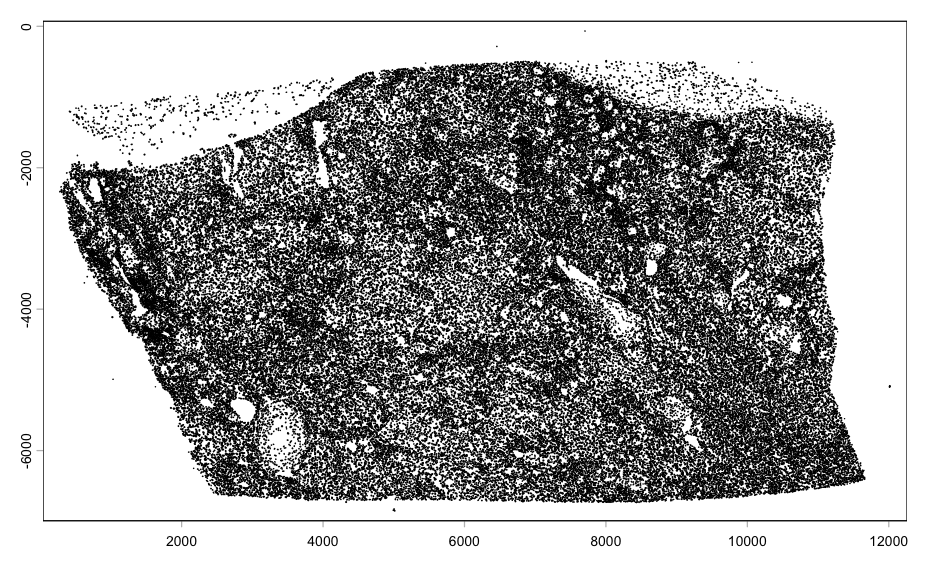
# transcript density
getFeatureInfo(g, "rna") |>
plot()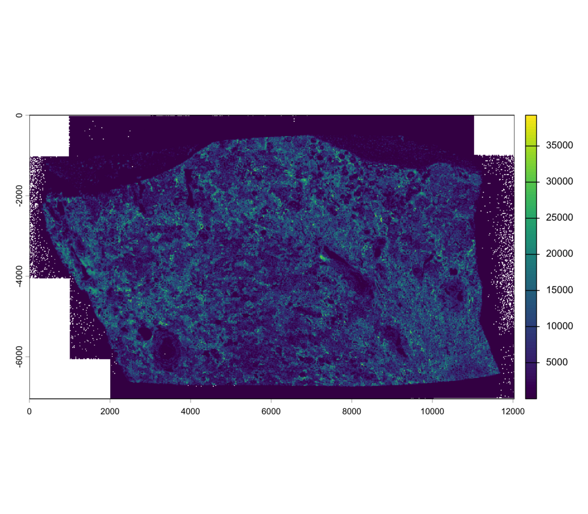
5.1 Save
Backed Giotto projects write snapshots of analysis state to the
project directory. Save and load operations are faster than in-memory
ones and can be treated as checkpoints. From here on,
loadGiotto(project_dir, name = "ingest") reopens the object
in seconds, so the reading above never has to be repeated.
# name param (optional) assigns the snapshot a name
# The return value is needed since saveGiotto makes changes during the write
# Either use the returned value or immediately load with `loadGiotto()`
g <- saveGiotto(g, name = "ingest")5.2 Aggregate
Aggregate the spatial transcripts with the default polygon layer (the cell outlines). This replaces the 10x expression matrix with one Giotto computes from the transcripts.
This step can be skipped: the 10x expression matrix read above is used otherwise.
load_transcripts = FALSE above skips reading the
transcripts, which shortens the one-time reading step. It also means
individual transcripts cannot be plotted or re-aggregated later.
g <- aggregateFeatures(g)
g <- saveGiotto(g, name = "aggregated")6 Memory and window size
The steps below never load the whole expression matrix. They read it in windows of cells, sized to a share of the memory that is free when the step starts (25% by default), so the same code runs on a laptop and on a server: a smaller machine reads more, smaller windows.
storeChunkProbe() reads one window on your machine and
reports the time and memory it took, and the window that fits the
budget:
pe <- getExpression(g, values = "raw", output = "exprObj")[]
GiottoDisk::storeChunkProbe(pe, cells = 20000)── storeChunkProbe ──────────────────────────────────────────────────
Store : parquetExprStore, 18,049 features x 399,120 cells
Probe : 20,000 cells, 43,392,936 stored values
Measured : 5.4 s, 2,948 MB peak (68 bytes per value)
Budget : 31,829 MB (0.25 of 127,444 MB free)
Window : 318,514 cells fit the budget -> 2 windows,
about 108.1 s to read the whole store once
options(giottodisk.chunk_size = 318514) pins this window.This run had 127 GB free, so two windows cover all 399,120 cells. With 8 GB free, the same store is read in about 18 windows of 22,000 cells. The time for one pass is scaled up from the probed window and is an upper bound, since a larger window reads faster per cell.
Options that change the windows for the rest of the session. This tutorial ran with the defaults, shown in the comments; set only the ones you need:
options(
giottodisk.chunk_ram_frac = 0.1, # share of free RAM per window (0.25)
giottodisk.chunk_size = 20000, # pin the window, in cells (NULL)
giottodisk.chunk_min_rows = 5000 # smallest calculated window (10000)
)Lower giottodisk.chunk_ram_frac on a machine that is
busy with other work. Pin giottodisk.chunk_size when the
probe suggests a window you want to keep.
GiottoDisk::storeChunkInfo() tabulates the calculated
windows for several budgets without reading any data.
7 Quality control and filtering
g <- addStatistics(g, expression_values = "raw")
cx <- pDataDT(g)
cat(sprintf("%s cells | median %d counts, %d features per cell\n",
format(nrow(cx), big.mark = ","),
as.integer(median(cx$total_expr)), as.integer(median(cx$nr_feats)))
)399,120 cells | median 1550 counts, 1191 features per cellA threshold of 50 detected genes removes only empty or fragmented outlines.
g <- filterGiotto(g,
expression_threshold = 1,
feat_det_in_min_cells = 1,
min_det_feats_per_cell = 50,
verbose = FALSE
)
cat(sprintf("%s cells x %s features retained\n",
format(nrow(pDataDT(g)), big.mark = ","),
format(nrow(fDataDT(g, feat_type = "rna")), big.mark = ","))
)395,606 cells x 18,049 features retained8 Normalize and select features
g <- normalizeGiotto(g,
scalefactor = 1e4,
logbase = exp(1),
log_offset = 1,
scale_feats = FALSE,
scale_cells = FALSE,
verbose = FALSE
)
g <- calculateHVF(g,
method = "cov_loess",
n_top_feats = 2000,
verbose = FALSE
)
hvf <- fDataDT(g, feat_type = "rna")[hvf == "yes"]$feat_ID
cat(length(hvf), "highly variable features\n")
g <- saveGiotto(g, name = "normalized")2000 highly variable features9 Dimension reduction
scale_unit = TRUE scales to unit variance on the fly, so
no dense z-scored matrix is ever written.
g <- runPCA(g,
feats_to_use = "hvf",
ncp = 50,
method = "auto",
scale_unit = TRUE,
center = TRUE,
verbose = FALSE
)
screePlot(g)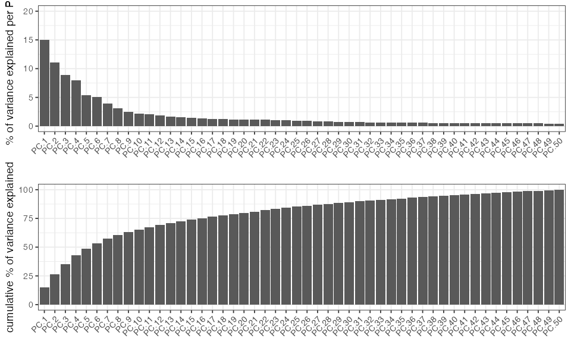
The kNN network is built first. runUMAP() reuses it
instead of searching for neighbors again, which also makes the UMAP
reproducible, and Leiden clusters on the same network.
dims_to_use <- 1:30 # use the top 30 PCs for UMAP and clustering
g <- createNearestNetwork(g,
type = "kNN",
dimensions_to_use = dims_to_use,
k = 30,
engine = "hnsw",
verbose = FALSE
)
g <- runUMAP(g,
dimensions_to_use = dims_to_use,
n_neighbors = 30,
min_dist = 0.3
)runUMAP: using the stored kNN 'kNN.pca' (29 neighbours per cell)10 Clustering
leiden_res <- 0.8
g <- doLeidenCluster(g,
nn_network_to_use = "kNN",
network_name = "kNN.pca",
resolution = leiden_res,
n_iterations = 20,
objective_function = "modularity",
verbose = FALSE
)
clusters <- GiottoUtils::mixedsort(unique(as.character(pDataDT(g)$leiden_clus)))
cat(length(clusters), "clusters at resolution", leiden_res, "\n")
# one color per cluster, shared by the plots below
clus_colors <- stats::setNames(getDistinctColors(length(clusters)), clusters)28 clusters at resolution 0.8
g <- saveGiotto(g, name = "clustered")The object is saved to the project directory and can be reloaded with
loadGiotto(project_dir, name = "clustered").
plotUMAP(g,
cell_color = "leiden_clus",
color_as_factor = TRUE,
cell_color_code = clus_colors,
point_border_stroke = 0,
point_size = 0.1
)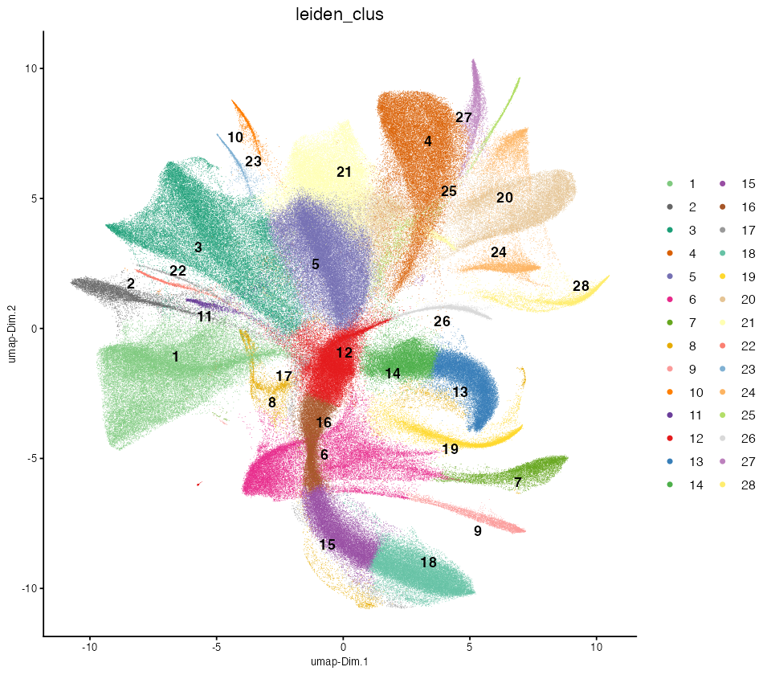
spatPlot2D(g,
cell_color = "leiden_clus",
color_as_factor = TRUE,
cell_color_code = clus_colors,
point_border_stroke = 0,
point_size = 0.2,
background_color = "black"
)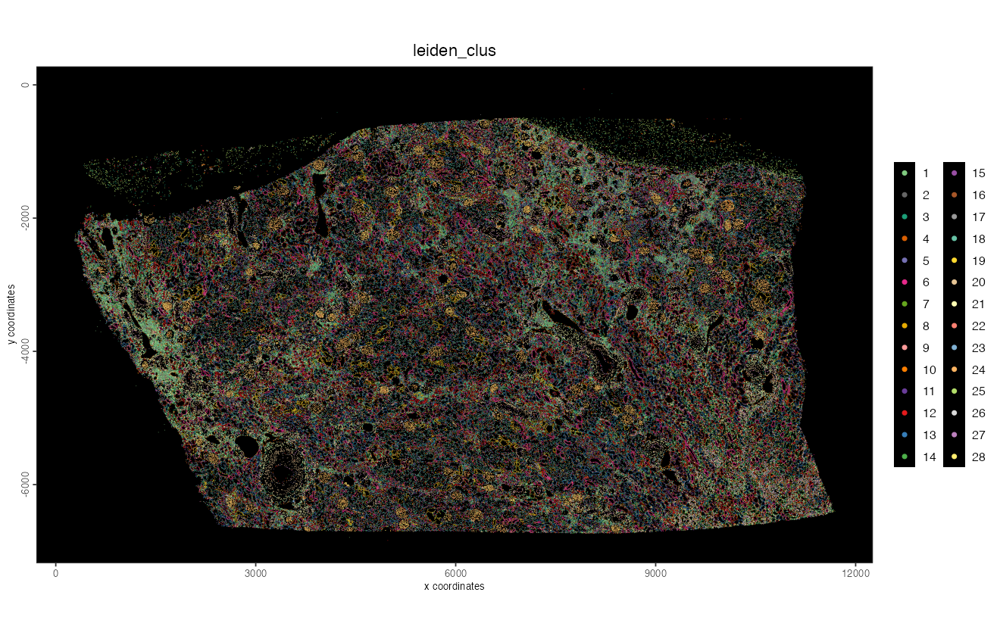
Establish an ROI around a group of glomeruli and get a zoomed in plot with the polygons.
roi <- c(6700, 7700, -2300, -1300) # xmin/xmax/ymin/ymax
g <- crop(g, roi, view = "roi")
spatInSituPlotPoints(g,
polygon_fill = "leiden_clus",
polygon_fill_as_factor = TRUE,
polygon_fill_code = clus_colors,
polygon_line_size = 0,
view = "roi"
)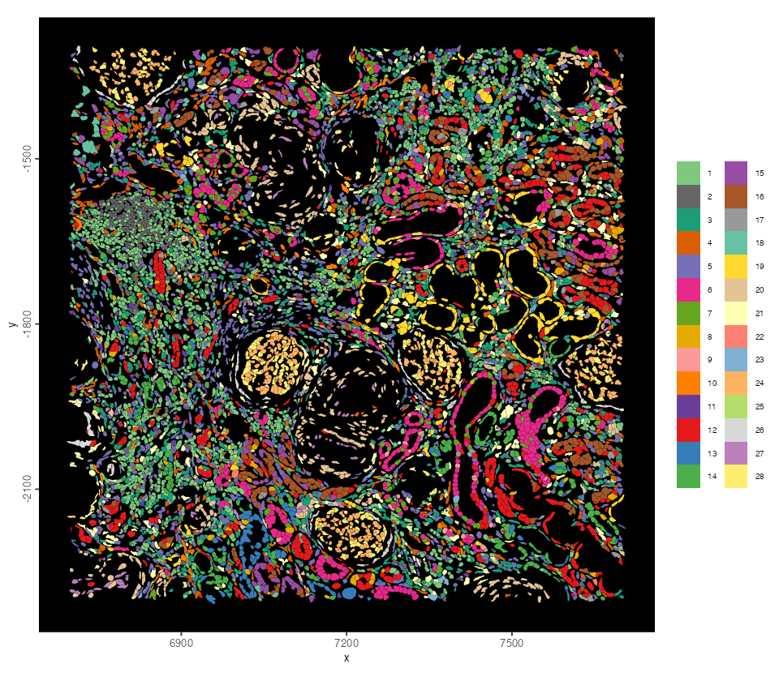
11 Cell types from cluster markers
findMarkers_one_vs_all() ranks the genes that set each
Leiden cluster apart from the others. The top eight per cluster:
markers <- findMarkers_one_vs_all(g,
method = "scran",
cluster_column = "leiden_clus",
min_feats = 5,
verbose = FALSE
)
top_markers <- markers[, .(top = paste(head(feats, 8), collapse = ", ")),
by = "cluster"]
top_markers[order(as.integer(cluster))] cluster top
<int> <char>
1: 1 CD53, TRAC, EVL, WIPF1, PIK3IP1, CXCR4, CD3E, TMC8
2: 2 MS4A1, CD53, LAPTM5, CD37, BANK1, CD79A, SMAP2, CD52
3: 3 CD163, C1QC, C1QA, STAB1, LAPTM5, CD14, VSIG4, HCLS1
4: 4 PECAM1, HSPG2, EPAS1, EGFL7, SHANK3, TGFBR2, PLAT, RAMP3
5: 5 C7, CALD1, RIPOR3, NFASC, PHLDB1, TSPYL2, COL6A2, CRISPLD2
6: 6 AQP2, HSD11B2, CALB1, CDH16, MUC1, MAL, SPTBN2, EPCAM
7: 7 SLC4A1, ATP6V1C2, SLC26A7, CA12, ATP6V0D2, TMEM213, ATP6V0A4, MAL
8: 8 ATP1A1, FARP1, CDH16, PAX8, ECHS1, SPP1, BICDL1, CD24
9: 9 CA12, KRT7, SLC26A4, ATP6V0A4, SLC4A9, IGFBP5, TMEM213, HMX2
10: 10 MMRN1, PKHD1L1, FABP4, TBX1, TGFBR2, FLT4, PROX1, LAPTM5
11: 11 TXNDC5, JCHAIN, MZB1, IGKC, XBP1, TP53INP1, IGHG1, SEL1L3
12: 12 CRYAB, PAX8, CLTRN, TNFSF10, CD24, ANPEP, AQP1, FARP1
13: 13 UMOD, SLC12A1, ATP1A1, MUC1, SERPINA5, SFRP1, EFHD1, KCNJ1
14: 14 SLC12A1, MUC1, ATP1A1, MAL, CDH16, TFCP2L1, CD24, EFHD1
15: 15 ANPEP, PCK1, ALDOB, SLC5A12, SMIM24, APOE, CRYAB, CLTRN
16: 16 ANPEP, CLTRN, SMIM24, CRYAB, LRP2, AQP1, GATM, IL17RB
17: 17 ANPEP, LRP2, CLTRN, IL17RB, CRYAB, TNFSF10, SLC17A1, CUBN
18: 18 SLC5A12, ALDOB, PCK1, PAH, ANPEP, APOE, LRP2, SLC22A8
19: 19 SLC12A3, SFRP1, CA12, TMEM52B, SERPINA5, ATP1A1, SPP1, ACSL4
20: 20 RGS5, NOTCH3, TAGLN, MFGE8, TPM2, EPAS1, MCAM, MYL9
21: 21 C7, C1R, AEBP1, COL6A2, TAGLN, FBLN5, PDGFRA, COL4A1
22: 22 KIT, IL1RL1, RGS2, PNMT, GATA2, SYTL3, IL18R1, RHEX
23: 23 CDH19, SCN7A, LGI4, SAMHD1, PRIMA1, GAS7, GPM6B, ITGB4
24: 24 IL1RL1, EPAS1, EMCN, SYNE1, NHERF2, CLIC5, TIMP3, KDR
25: 25 C1R, IGF2, COL6A2, MFGE8, C3, MGP, PLA2G2A, GAS1
26: 26 SLC4A11, ITGB3, TNNT2, CCN2, CCDC198, CFH, RAPGEF3, PAWR
27: 27 PECAM1, EPAS1, TIMP3, NHERF2, TM4SF1, HSPG2, KCTD12, PODXL
28: 28 PODXL, NPHS2, CLIC5, PLA2R1, MME, NPNT, VEGFA, IGFBP2Each cluster is named from its markers, read further down the list where the top eight are not enough, and from where it sits in the tissue:
- The nephron, from glomerulus to collecting duct: podocytes (28: PODXL, NPHS1, NPHS2), parietal epithelial cells of Bowman’s capsule (26: CFH, CLDN1, VCAM1, WT1), proximal tubule (15–18: LRP2, CUBN, SLC5A12, ALDOB), thick ascending limb (13, 14: UMOD, SLC12A1), distal convoluted tubule (19: SLC12A3), principal cells (6: AQP2, HSD11B2) and type A and B intercalated cells (7: SLC4A1, SLC26A7; 9: SLC26A4, SLC4A9).
- Cluster 12 is proximal tubule that has lost part of its program and gained VCAM1, HAVCR1 (KIM-1) and PROM1, the signature of injured tubule cells. Cluster 8 mixes proximal and distal tubule markers and is kept apart as “tubule, mixed”.
- Vessels: glomerular endothelium (24: EMCN, EHD3, CLIC5), peritubular capillaries (4: PECAM1, PLVAP), arterial endothelium (27: SEMA3G), lymphatics (10: PROX1, FLT4, MMRN1), and pericytes and smooth muscle cells (20: RGS5, NOTCH3, MYH11).
- Stroma and nerves: interstitial fibroblasts (5, 21: C7, PDGFRA), a MFAP5+/PLA2G2A+ fibroblast population (25) and Schwann cells (23: CDH19, SCN7A).
- Immune cells: T cells (1), B cells (2), plasma cells (11), macrophages (3) and mast cells (22).
Leiden cluster numbers can change between package versions or numbers of workers. Check the markers before reusing this mapping on your own run.
cell_types <- c(
"15" = "proximal tubule", "16" = "proximal tubule",
"17" = "proximal tubule", "18" = "proximal tubule",
"12" = "proximal tubule, VCAM1+",
"8" = "tubule, mixed",
"13" = "thick ascending limb", "14" = "thick ascending limb",
"19" = "distal convoluted tubule",
"6" = "principal cells",
"7" = "intercalated cells, type A", "9" = "intercalated cells, type B",
"28" = "podocytes", "26" = "parietal epithelial cells",
"24" = "glomerular endothelium", "4" = "endothelial cells",
"27" = "arterial endothelium", "10" = "lymphatic endothelium",
"20" = "pericytes and VSMC",
"5" = "fibroblasts", "21" = "fibroblasts", "25" = "fibroblasts, MFAP5+",
"23" = "Schwann cells",
"1" = "T cells", "2" = "B cells", "11" = "plasma cells",
"3" = "macrophages", "22" = "mast cells"
)
g <- annotateGiotto(g,
annotation_vector = cell_types,
cluster_column = "leiden_clus",
name = "cell_type"
)
# one color per cell type, shared by the plots below
type_colors <- c(
"proximal tubule" = "#1f78b4", "proximal tubule, VCAM1+" = "#a6cee3",
"tubule, mixed" = "#8c8c8c",
"thick ascending limb" = "#33a02c", "distal convoluted tubule" = "#b2df8a",
"principal cells" = "#ff7f00",
"intercalated cells, type A" = "#fdbf6f",
"intercalated cells, type B" = "#b15928",
"podocytes" = "#e31a1c", "parietal epithelial cells" = "#fb9a99",
"glomerular endothelium" = "#ffff33", "endothelial cells" = "#c51b7d",
"arterial endothelium" = "#7a0177", "lymphatic endothelium" = "#f1b6da",
"pericytes and VSMC" = "#e6ab02",
"fibroblasts" = "#66c2a5", "fibroblasts, MFAP5+" = "#1b9e77",
"Schwann cells" = "#bf812d",
"T cells" = "#17becf", "B cells" = "#3f51b5", "plasma cells" = "#9e9ac8",
"macrophages" = "#6a3d9a", "mast cells" = "#d9d9d9"
)
sort(table(pDataDT(g)$cell_type), decreasing = TRUE) fibroblasts proximal tubule T cells macrophages
66777 57867 38594 36844
endothelial cells thick ascending limb proximal tubule, VCAM1+ principal cells
32410 31084 26315 23719
pericytes and VSMC glomerular endothelium distal convoluted tubule B cells
20529 9386 8101 6770
intercalated cells, type A podocytes tubule, mixed arterial endothelium
6690 5018 4982 4083
intercalated cells, type B fibroblasts, MFAP5+ parietal epithelial cells lymphatic endothelium
3524 2965 2923 1950
Schwann cells plasma cells mast cells
1872 1806 1397
spatPlot2D(g,
cell_color = "cell_type",
color_as_factor = TRUE,
cell_color_code = type_colors,
point_border_stroke = 0,
point_size = 0.2,
background_color = "black"
)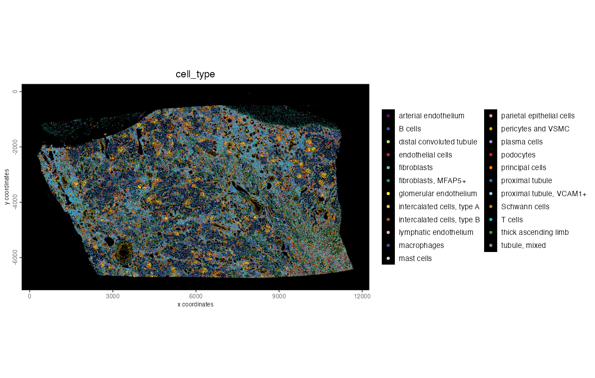
In the ROI, each glomerulus shows podocytes (red) around glomerular endothelium (yellow), lined by parietal epithelial cells, among proximal tubules, thick ascending limbs and collecting ducts. A large T cell aggregate sits in the upper left.
spatInSituPlotPoints(g,
polygon_fill = "cell_type",
polygon_fill_as_factor = TRUE,
polygon_fill_code = type_colors,
polygon_line_size = 0,
view = "roi"
)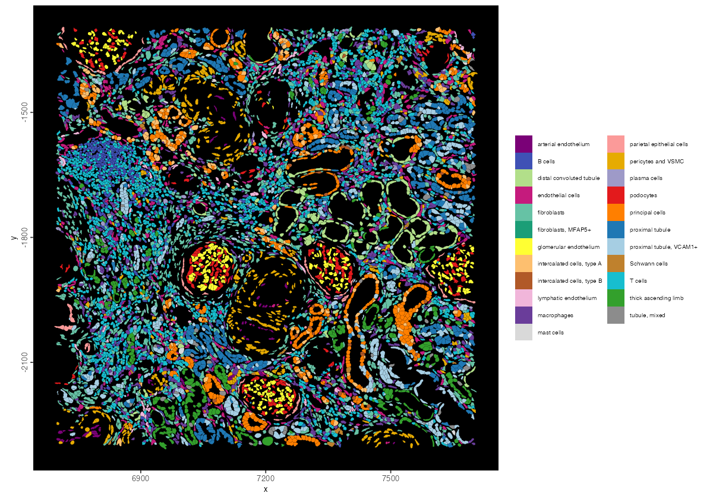
Zooming in on two glomeruli with the DAPI image (default) underneath:
spatInSituPlotPoints(g,
polygon_fill = "cell_type",
polygon_fill_as_factor = TRUE,
polygon_fill_code = type_colors,
polygon_line_size = 0.2,
polygon_alpha = 0.5,
xlim = c(6950, 7400),
ylim = c(-2050, -1800),
view = "roi",
show_image = TRUE
)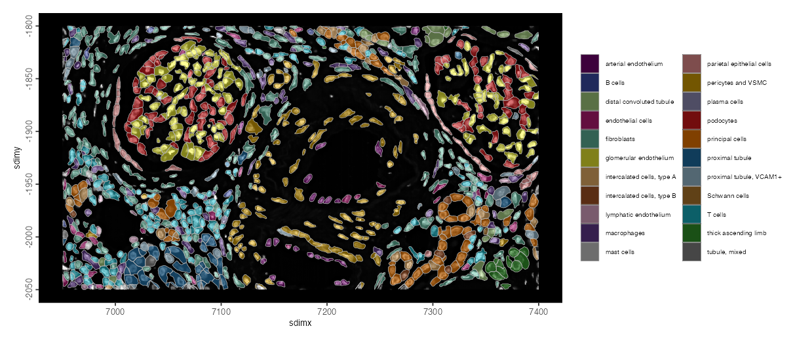
g <- saveGiotto(g, name = "annotated")12 Spatially variable genes
A spatial network links each cell to its neighbors. The Delaunay network connects every cell to the cells that share an edge of the triangulation of the cell centers.
g <- createSpatialNetwork(g,
method = "Delaunay",
delaunay_method = "delaunayn_geometry",
verbose = FALSE
)Moran’s I measures whether a gene’s expression is more similar
between neighboring cells than expected by chance.
spatialAutoCor() computes it for all 18,049 genes on the
disk-backed expression.
moran <- spatialAutoCor(g,
method = "moran",
spatial_network_name = "Delaunay_network",
return_gobject = FALSE
)
head(moran[, .(feats, statistic, z, adj.p.value)], 10) feats statistic z adj.p.value
<char> <num> <num> <num>
1: AQP2 0.5339408 566.1267 0
2: CALB1 0.5183201 549.5648 0
3: UMOD 0.5049344 535.3727 0
4: SLC12A1 0.4964804 526.4062 0
5: FGF1 0.4902072 519.7773 0
6: ALDOB 0.4821898 511.2525 0
7: SLC12A3 0.4811448 510.1625 0
8: HSD11B2 0.4786166 507.4630 0
9: CLIC5 0.4673300 495.5066 0
10: CLTRN 0.4548890 482.3049 0The genes with the highest Moran’s I each mark one segment of the nephron: the collecting duct (AQP2, HSD11B2), the connecting and distal tubule (CALB1, SLC12A3), the thick ascending limb (UMOD, SLC12A1), the proximal tubule (ALDOB, CLTRN) and the glomeruli (FGF1, CLIC5).
spatFeatPlot2D(g,
expression_values = "normalized",
feats = moran$feats[1:6],
gradient_style = "sequential",
point_size = 0.2,
point_border_stroke = 0,
background_color = "black",
cow_n_col = 2
)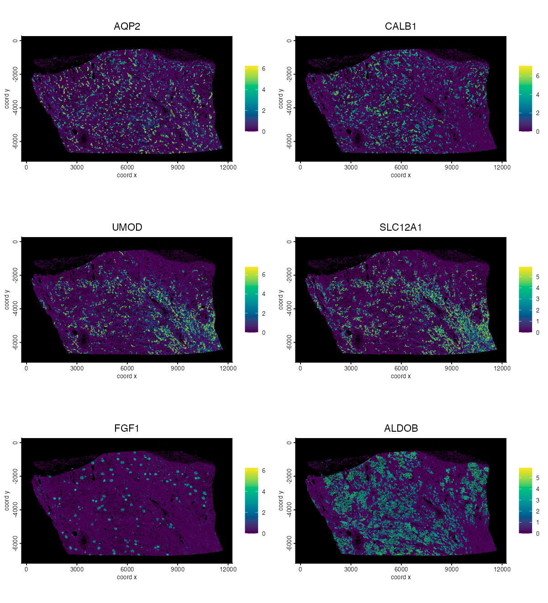
13 Spatial co-expression modules
spatialCoexpression() averages each cell’s expression
with its neighbors’ in the spatial network, correlates the genes on
these smoothed values, and clusters the correlation into modules. It
runs on the 500 genes with the highest Moran’s I.
spatial_genes <- moran$feats[1:500]
coexpr <- spatialCoexpression(g,
feats = spatial_genes,
spatial_network_name = "Delaunay_network",
n_modules = 12,
return_gobject = FALSE
)
coexpr$summary module size within_cor between_cor score
<int> <int> <num> <num> <num>
1: 12 12 0.62705008 -0.17025979 0.62705008
2: 7 115 0.62879799 0.11470150 0.44961490
3: 3 33 0.49288059 -0.07894577 0.44787368
4: 4 50 0.64587865 0.15433565 0.43622939
5: 1 39 0.53897550 0.04609605 0.42236500
6: 9 39 0.44261863 -0.12305499 0.42172490
7: 2 25 0.53569295 0.07285556 0.40545777
8: 6 66 0.52176309 0.08132353 0.39049620
9: 5 10 0.46331126 0.06878825 0.35255761
10: 8 63 0.54757807 0.22116485 0.33324252
11: 10 30 0.40866457 0.17244987 0.26861127
12: 11 18 0.07054889 0.03393341 0.05614329The summary ranks the modules: a high within_cor and a
low between_cor mean a module is coherent and distinct from
the others.
heatmapCoexpression(g, coexpr)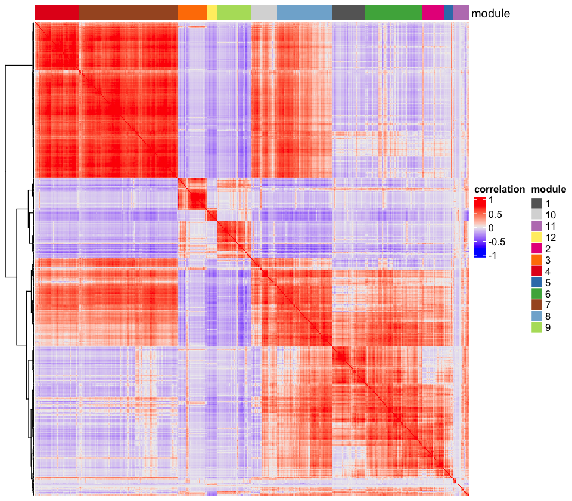
The genes that best represent each of the four top-ranked modules:
top_modules <- coexpr$summary$module[1:4]
coexpr$feats[module %in% top_modules][
order(match(module, top_modules), -module_cor),
head(.SD, 5), by = "module"
] module feat_ID module_cor
<int> <char> <num>
1: 12 CD53 0.6731775
2: 12 CXCR4 0.6714477
3: 12 ACAP1 0.6577427
4: 12 TMC8 0.6560036
5: 12 IKZF1 0.6555216
6: 7 LRP2 0.7393227
7: 7 GLYAT 0.7381796
8: 7 ANPEP 0.7376737
9: 7 CUBN 0.7356980
10: 7 IL17RB 0.7326995
11: 3 NPHS2 0.6527897
12: 3 NPHS1 0.6348552
13: 3 CLIC5 0.6243521
14: 3 FGF1 0.6226819
15: 3 NDNF 0.6208675
16: 4 SLC5A12 0.7693958
17: 4 ALDOB 0.7587531
18: 4 SLC22A6 0.7461151
19: 4 DPYS 0.7413423
20: 4 UGT1A9 0.7319696The top module is the lymphocyte infiltrates (module 12). Module 3 is the glomeruli. Modules 7 and 4 split the proximal tubule into two programs: one for endocytic uptake (LRP2, CUBN) and one for gluconeogenesis and organic anion transport (ALDOB, SLC5A12, SLC22A6).
The same call with the default return_gobject = TRUE
adds the module scores to the object, one per cell and module:
g <- spatialCoexpression(g,
feats = spatial_genes,
spatial_network_name = "Delaunay_network",
n_modules = 12
)Each module’s color scale is capped at the 99th percentile of its non-zero scores, so a few high-scoring cells do not wash out the rest:
module_scores <- getSpatialEnrichment(g, name = "spatial_module",
output = "data.table")
for (m in as.character(top_modules)) {
v <- module_scores[[m]]
spatCellPlot2D(g,
spat_enr_names = "spatial_module",
cell_annotation_values = m,
gradient_style = "sequential",
gradient_limits = c(0, stats::quantile(v[v > 0], 0.99)),
point_size = 0.2,
point_border_stroke = 0,
background_color = "black"
)
}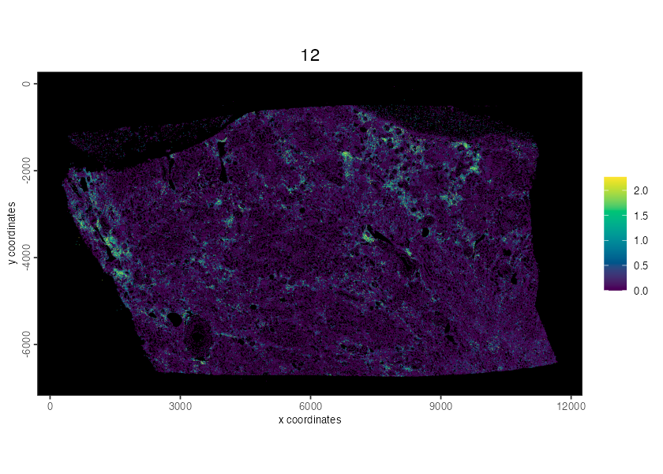
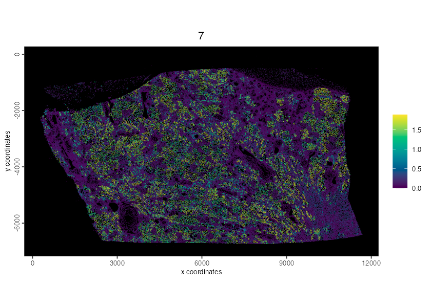
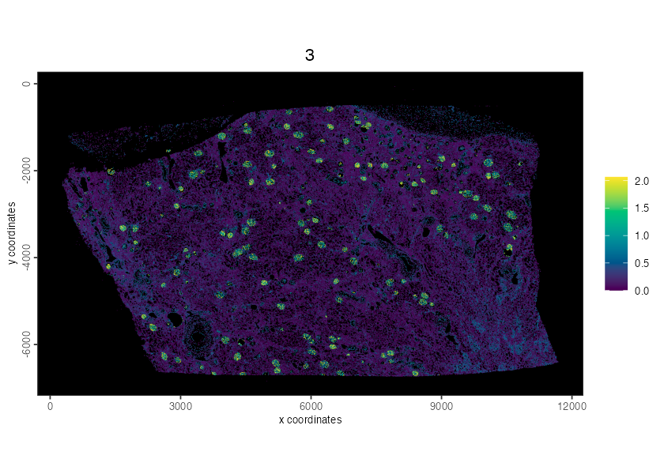
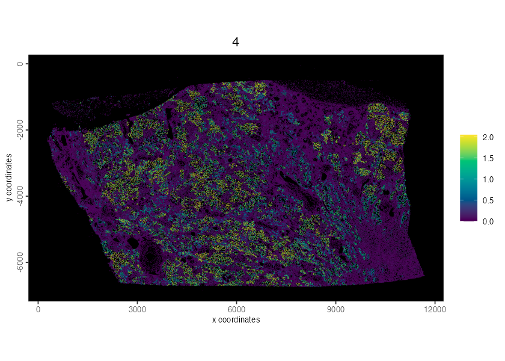
14 Spatial enrichment
PAGE scores each cell for a set of marker genes per cell type, here short signatures for the nephron segments and the main other cell types of the kidney.
signatures <- list(
proximal_tubule = c("LRP2", "CUBN", "SLC34A1", "SLC5A12", "ALDOB", "PCK1"),
loop_of_henle = c("UMOD", "SLC12A1", "KCNJ1", "CLDN16", "CASR"),
distal_tubule = c("SLC12A3", "CALB1", "TRPM6", "PVALB"),
collecting_duct = c("AQP2", "AQP3", "SCNN1G", "FXYD4", "HSD11B2"),
intercalated = c("ATP6V1B1", "ATP6V0D2", "SLC4A1", "SLC26A4", "FOXI1"),
podocyte = c("NPHS1", "NPHS2", "PODXL", "PTPRO", "CLIC5", "WT1"),
endothelial = c("PECAM1", "VWF", "CDH5", "EMCN", "PLVAP", "KDR"),
stromal = c("PDGFRB", "COL1A1", "COL3A1", "DCN", "C7", "RGS5"),
T_NK = c("CD3E", "CD3D", "CD2", "TRAC", "NKG7", "GZMA"),
myeloid = c("CD68", "CD163", "C1QA", "C1QB", "CSF1R", "AIF1")
)
sign_matrix <- makeSignMatrixPAGE(names(signatures), signatures)
g <- runPAGEEnrich(g,
sign_matrix = sign_matrix,
expression_values = "normalized",
min_overlap_genes = 3, # the distal tubule signature has 4 genes
verbose = FALSE
)Each signature’s color scale is capped at the 1st and 99th percentile of its scores:
page_scores <- getSpatialEnrichment(g, name = "PAGE", output = "data.table")
for (sig in c("proximal_tubule", "loop_of_henle", "collecting_duct",
"podocyte", "stromal", "T_NK")) {
v <- page_scores[[sig]]
spatCellPlot2D(g,
spat_enr_names = "PAGE",
cell_annotation_values = sig,
gradient_style = "sequential",
gradient_limits = stats::quantile(v, c(0.01, 0.99)),
point_size = 0.2,
point_border_stroke = 0,
background_color = "black"
)
}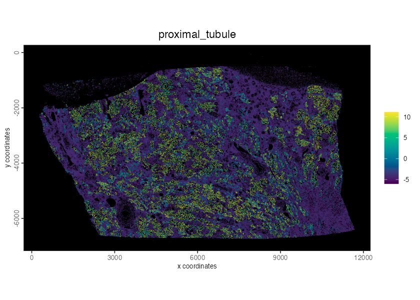
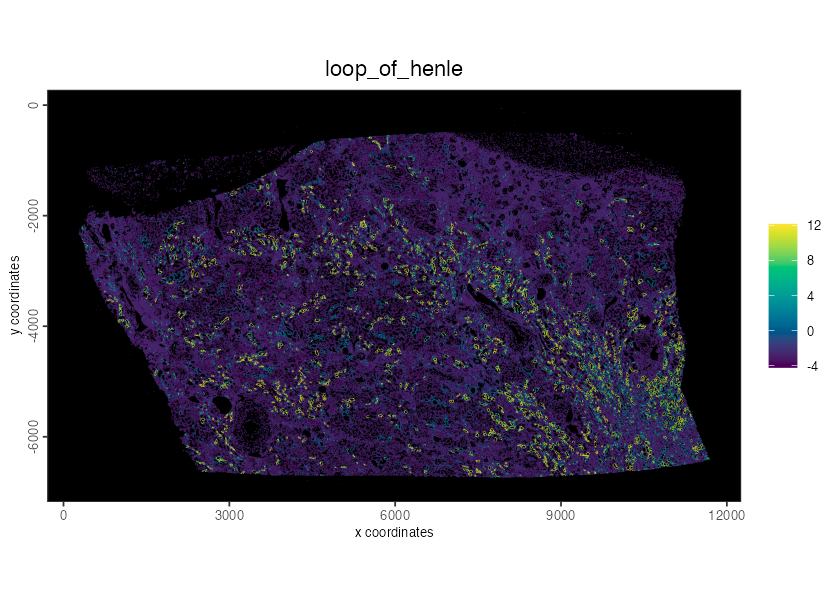
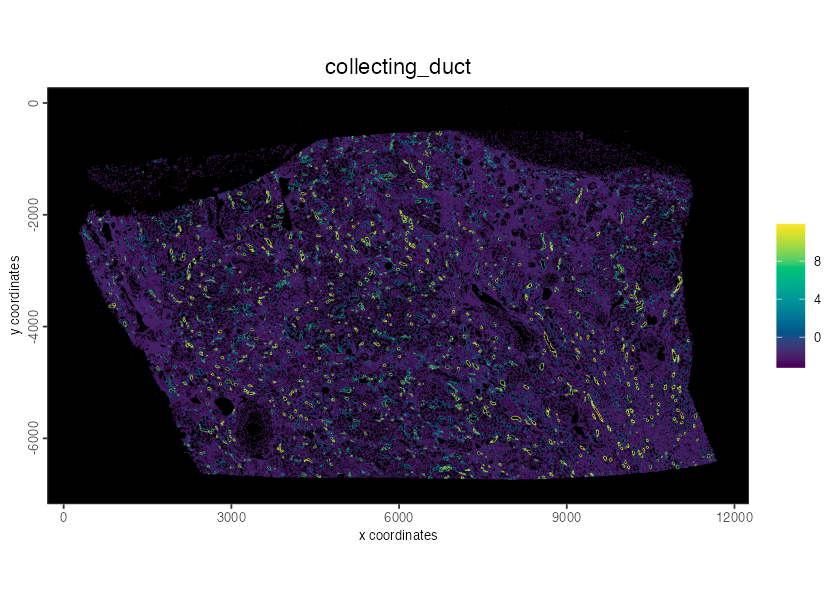
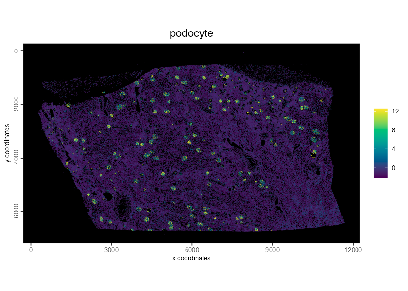
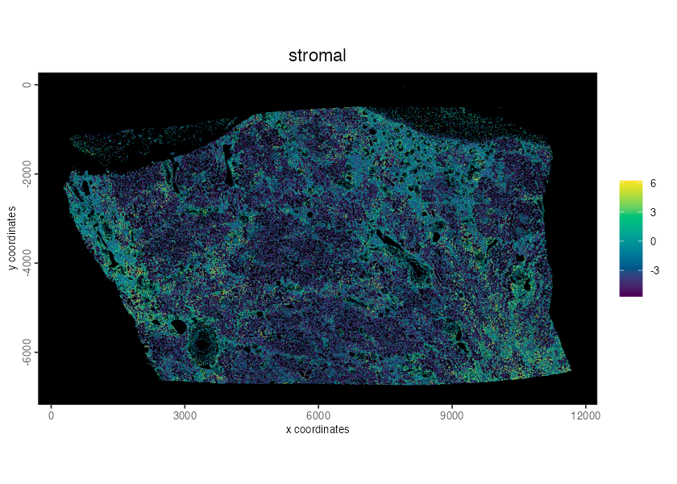
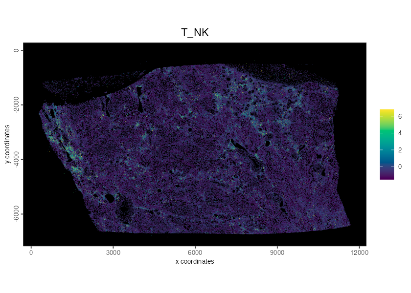
To check the marker-based names against these independent gene sets, ask, for each signature, which cell type scores highest on average:
page <- merge(page_scores, pDataDT(g)[, .(cell_ID, cell_type)], by = "cell_ID")
scored <- intersect(names(signatures), names(page))
page_mean <- page[, lapply(.SD, mean), by = "cell_type", .SDcols = scored]
data.table::data.table(
signature = scored,
top_cell_type = vapply(scored, function(s) {
page_mean$cell_type[which.max(page_mean[[s]])]
}, character(1L)),
second = vapply(scored, function(s) {
page_mean$cell_type[order(-page_mean[[s]])[2]]
}, character(1L))
) signature top_cell_type second
<char> <char> <char>
1: proximal_tubule proximal tubule tubule, mixed
2: loop_of_henle thick ascending limb distal convoluted tubule
3: distal_tubule distal convoluted tubule principal cells
4: collecting_duct principal cells intercalated cells, type B
5: intercalated intercalated cells, type A intercalated cells, type B
6: podocyte podocytes glomerular endothelium
7: endothelial endothelial cells arterial endothelium
8: stromal fibroblasts pericytes and VSMC
9: T_NK T cells B cells
10: myeloid macrophages T cellsEvery signature scores highest in the cell type it describes, and the second is a neighboring segment or a related type. Reading the table the other way, by the best signature per cell type, would not work here. Cell types without a signature of their own, such as B cells or Schwann cells, are then assigned whichever signature they score least badly on.
g <- saveGiotto(g, name = "spatial")15 Cell-cell interactions
cellProximityMotifs() counts which cell types are
neighbors in the spatial network more or less often than expected when
the labels are shuffled. Pairs of neighbors (size = 2) give
the classic proximity enrichment:
pairs <- cellProximityMotifs(g,
spatial_network_name = "Delaunay_network",
cluster_column = "cell_type",
size = 2L,
n_perm = 1000L
)
plotMotifEnrichment(g, pairs)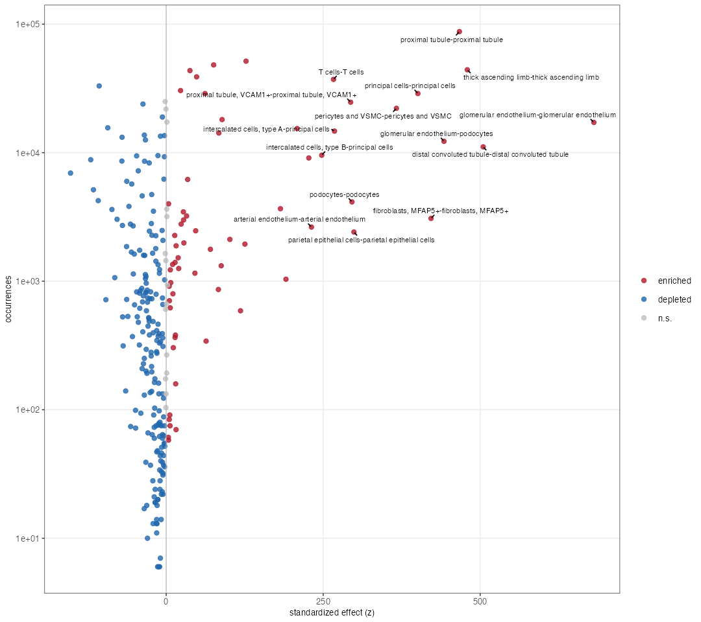
Each cell type is most enriched next to its own kind, as expected for tubules and glomeruli. Glomerular endothelium next to podocytes is one of the most enriched pairs between two different types.
Motifs of three cells (size = 3) with the conditional
null hold the observed pairs fixed, so a triplet that is still enriched
is enriched beyond what its pairs already explain:
triplets <- cellProximityMotifs(g,
spatial_network_name = "Delaunay_network",
cluster_column = "cell_type",
size = 3L,
null = "conditional",
n_perm = 1000L
)
head(triplets[order(-z), .(motif_id, observed, expected, fold, p_adj)], 10) motif_id observed expected fold p_adj
<char> <num> <num> <num> <num>
1: size3_open_fibroblasts-fibroblasts-fibroblasts 50212 43814.039 1.146025 0.01002828
2: size3_open_proximal tubule-proximal tubule, VCAM1+-T cells 3056 1624.740 1.880916 0.01002828
3: size3_open_proximal tubule-proximal tubule, VCAM1+-proximal tubule, VCAM1+ 5259 3340.192 1.574460 0.01002828
4: size3_open_tubule, mixed-thick ascending limb-thick ascending limb 2025 1185.039 1.708805 0.01002828
5: size3_open_pericytes and VSMC-T cells-T cells 1321 748.024 1.765986 0.01002828
6: size3_open_proximal tubule, VCAM1+-proximal tubule-proximal tubule 9896 7699.868 1.285217 0.01002828
7: size3_open_macrophages-fibroblasts-fibroblasts 19037 17168.147 1.108856 0.01002828
8: size3_open_fibroblasts-endothelial cells-proximal tubule 13238 11231.294 1.178671 0.01002828
9: size3_open_fibroblasts-T cells-T cells 15902 11088.096 1.434151 0.01002828
10: size3_open_fibroblasts, MFAP5+-fibroblasts-fibroblasts 386 192.563 2.004539 0.01002828In an open motif the first cell type listed is the center that links the other two. The glyphs draw the top-ranked triplets:
plotMotifGlyphs(g, triplets, cell_color_code = type_colors)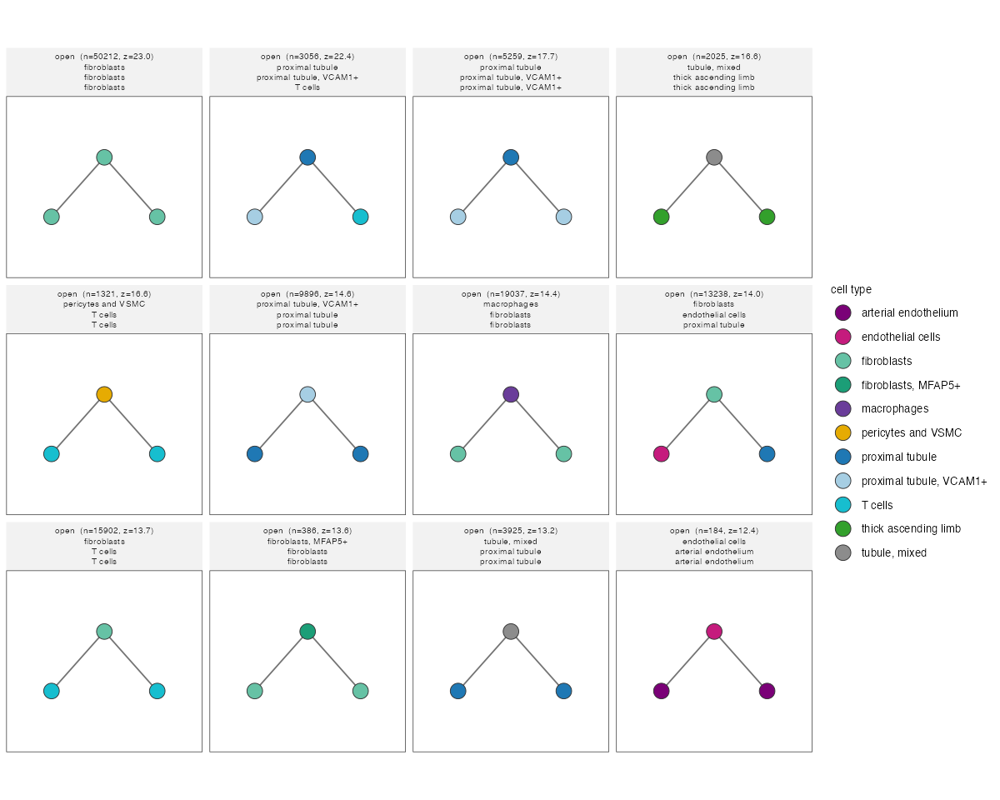
The top triplet is fibroblasts in a row, the large interstitial areas of the section. The second is more specific: a proximal tubule cell between an injured, VCAM1+ tubule cell and a T cell, almost twice as often as its pairs predict. It marks where T cells sit against injured tubules:
spatMotifPlot(g,
motif_id = "size3_open_proximal tubule-proximal tubule, VCAM1+-T cells",
cluster_column = "cell_type",
spatial_network_name = "Delaunay_network"
)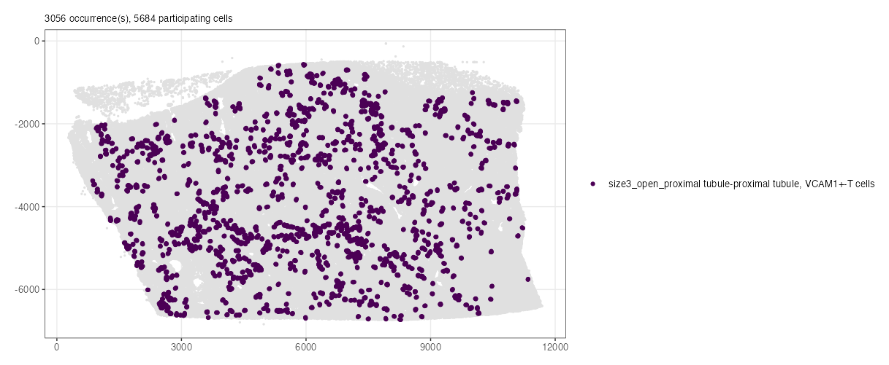
g <- saveGiotto(g, name = "analyzed")16 Further reading
Suggested further topics:
- Atera Human Breast Cancer, for Atera preview data in the Xenium layout
- Continue with Cell typing with a cluster tree for a more systematic annotation than the cluster markers above
- GiottoLens for interactive visualization and annotation
17 Session info
R version 4.5.1 (2025-06-13)
Platform: aarch64-apple-darwin20
Running under: macOS Sonoma 14.5
Matrix products: default
BLAS: /Library/Frameworks/R.framework/Versions/4.5-arm64/Resources/lib/libRblas.0.dylib
LAPACK: /Library/Frameworks/R.framework/Versions/4.5-arm64/Resources/lib/libRlapack.dylib; LAPACK version 3.12.1
locale:
[1] en_US/en_US/en_US/C/en_US/en_US
time zone: America/New_York
tzcode source: internal
attached base packages:
[1] stats graphics grDevices utils datasets methods base
other attached packages:
[1] GiottoDisk_0.0.0.6 Giotto_4.3.5 GiottoClass_0.7.18 arrow_23.0.1.2
loaded via a namespace (and not attached):
[1] RColorBrewer_1.1-3 shape_1.4.6.1 jsonlite_2.0.0 wk_0.9.5
[5] magrittr_2.0.4 magick_2.9.1 farver_2.1.2 GlobalOptions_0.1.4
[9] ragg_1.5.2 vctrs_0.7.2 Cairo_1.7-0 memoise_2.0.1
[13] GiottoUtils_0.2.7 terra_1.9-11 htmltools_0.5.9 S4Arrays_1.8.1
[17] future.mirai_1.0.0 BiocNeighbors_2.2.0 SparseArray_1.8.1 parallelly_1.46.1
[21] htmlwidgets_1.6.4 plotly_4.12.0 cachem_1.1.0 igraph_2.2.2
[25] lifecycle_1.0.5 iterators_1.0.14 pkgconfig_2.0.3 rsvd_1.0.5
[29] Matrix_1.7-3 R6_2.6.1 fastmap_1.2.0 clue_0.3-68
[33] GenomeInfoDbData_1.2.14 MatrixGenerics_1.20.0 future_1.70.0 magic_1.6-1
[37] digest_0.6.39 colorspace_2.1-2 S4Vectors_0.48.1 irlba_2.3.7
[41] textshaping_1.0.5 GenomicRanges_1.60.0 beachmat_2.24.0 filelock_1.0.3
[45] labeling_0.4.3 httr_1.4.8 polyclip_1.10-7 abind_1.4-8
[49] compiler_4.5.1 smotif_0.2.0 bit64_4.6.0-1 withr_3.0.2
[53] doParallel_1.0.17 smotifrs_0.2.0 S7_0.2.1 backports_1.5.1
[57] BiocParallel_1.42.2 viridis_0.6.5 ggforce_0.5.0 R.utils_2.13.0
[61] sedonadb_0.5.0.9000 MASS_7.3-65 DelayedArray_0.34.1 rjson_0.2.23
[65] bluster_1.18.0 gtools_3.9.5 GiottoVisuals_0.2.16 tools_4.5.1
[69] otel_0.2.0 R.oo_1.27.1 glue_1.8.0 grid_4.5.1
[73] checkmate_2.3.4 cluster_2.1.8.3 generics_0.1.4 gtable_0.3.6
[77] R.methodsS3_1.8.2 tidyr_1.3.2 data.table_1.18.2.1 BiocSingular_1.24.0
[81] tidygraph_1.3.1 ScaledMatrix_1.16.0 XVector_0.48.0 BiocGenerics_0.54.1
[85] tilework_1.0.0 ggrepel_0.9.8 foreach_1.5.2 pillar_1.11.1
[89] nanoarrow_0.9.0 RcppHNSW_0.7.0 circlize_0.4.18 dplyr_1.2.0
[93] tweenr_2.0.3 lattice_0.22-7 bit_4.6.0 tidyselect_1.2.1
[97] ComplexHeatmap_2.26.1 SingleCellExperiment_1.30.1 gridExtra_2.3 IRanges_2.42.0
[101] Seqinfo_1.0.0 SummarizedExperiment_1.38.1 scattermore_1.2 stats4_4.5.1
[105] graphlayouts_1.2.3 Biobase_2.68.0 matrixStats_1.5.0 UCSC.utils_1.4.0
[109] lazyeval_0.2.2 GiottoKernels_0.3.0 codetools_0.2-20 ggraph_2.2.2
[113] tibble_3.3.1 colorRamp2_0.1.0 cli_3.6.5 geometry_0.5.2
[117] systemfonts_1.3.2 mirai_2.7.2 Rcpp_1.1.2 GenomeInfoDb_1.44.3
[121] globals_0.19.1 png_0.1-9 nanonext_1.10.2 parallel_4.5.1
[125] ggplot2_4.0.2 assertthat_0.2.1 listenv_0.10.1 SpatialExperiment_1.20.0
[129] geoarrow_0.4.4 viridisLite_0.4.3 scales_1.4.0 purrr_1.2.1
[133] crayon_1.5.3 GetoptLong_1.1.1 rlang_1.1.7 cowplot_1.2.0